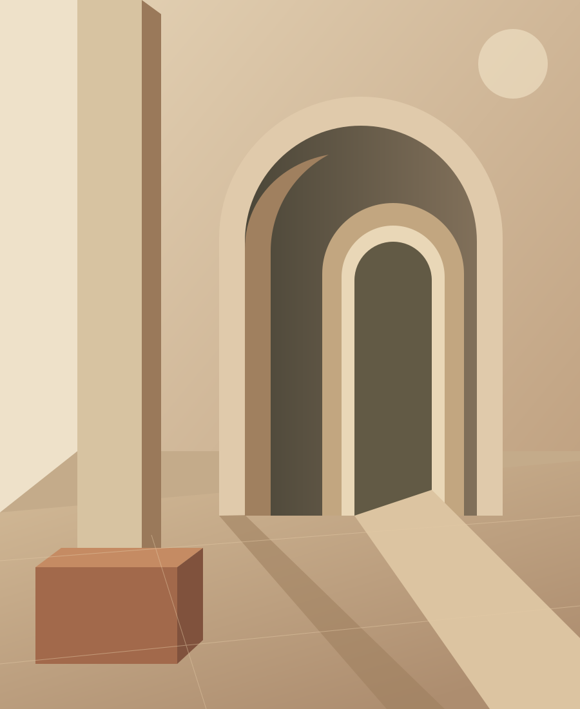

01 · HABITER
Architecture résidentielle
Des espaces pour les gestes du quotidien.
Portfolio en préparationMARRAKECH · ARCHITECTURE & INTÉRIEURS
Dessiner des espaces qui font dialoguer les usages, la matière et la lumière.
Découvrir notre approche
01 / LE CABINET
Verse Atelier est un cabinet d’architecture basé à Marrakech, dirigé par Nada Belkabir. Nous abordons chaque projet à partir de son contexte, des modes de vie et des attentes de celles et ceux qui l’habitent.
De la conception architecturale à l’aménagement intérieur, notre démarche recherche une cohérence entre espace, lumière et matériaux, avec une attention particulière au bâti existant.
02 / PROJETS
Une sélection à découvrir prochainement.
01 · HABITER
Des espaces pour les gestes du quotidien.
Portfolio en préparation02 · TRANSFORMER
La lumière et la matière comme fil conducteur.
Portfolio en préparation03 · TRANSMETTRE
Imaginer de nouveaux usages pour l’existant.
Portfolio en préparation03 / SERVICES
Un accompagnement adapté à la nature et à l’échelle de votre projet.
Études, organisation des espaces et développement du projet.
Ambiances, matériaux, mobilier et détails d’agencement.
Lecture de l’existant et transformation respectueuse de son caractère.
Échanges avec les bureaux d’études et les entreprises, selon la mission convenue.
04 / PRENONS CONTACT
À bientôt à l’atelier
Marrakech, Maroc
Coordonnées professionnelles à venir